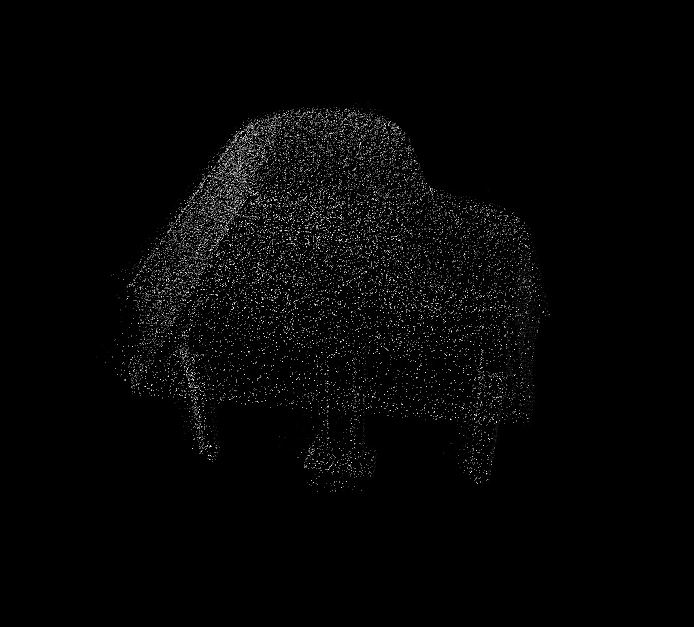

The person I met today said, it was sad to see a kindergarten kid tapping a key card at the entrance of an apartment without a security guard, pressing the password and entering the building alone.
I thought of the sight I saw in the morning.
When I wore a VR headset,
snow fell in the forest.
I rather thought the snow was warm.
I like the episode where Chroniko’s mother sells her memory on how to play the piano.
The episode is very gloomy but I like it because I see hope is still there, just like how Tetsuro heads to Andromeda galaxy to get a machine body.
It occurred to me.
When that time comes, when we don’t care if everyone has a body or vice versa, when we can change our bodies…
Do I become one of ‘them’? Or do they become a part of ‘us’?
Do we all end up as one when I can choose to exist in a doll, in a child’s body, or in a computer?
Whatever happens, at least everything we care about right now becomes pointless.
It reminds me of the numerous clones of Maetel.